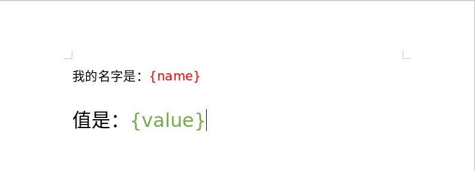
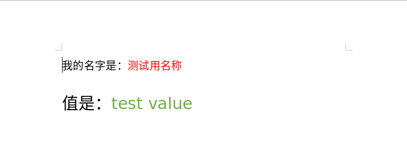
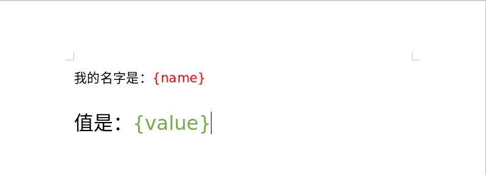
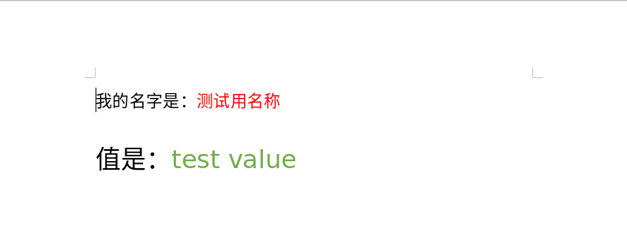

javascript third party
//
代码转换
vscode
linux环境下在vscode中调试nodejs代码时若打开的路径是用软链接时会导致断点无法绑定(Breakpoint set but not yet bound)
例如:
代码文件夹的真实路径为:~/true_path/code/nodejs_code
~/soft_link -> ~/true_path/code/nodejs_code
在vscode中打开~/soft_link文件夹则会导致断点无法绑定
例如:
代码文件夹的真实路径为:~/true_path/code/nodejs_code
~/soft_link -> ~/true_path/code/nodejs_code
在vscode中打开~/soft_link文件夹则会导致断点无法绑定
webpack
在webpack 4.42.1版本中json文件不需要在配置文件中配置loader, 直接使用就可, 若配置了loader则会报错
microsoft office
docxtemplater is a library to generate docx/pptx documents from a docx/pptx template. It can replace {placeholders} with data and also supports loops and conditions. The templates can be edited by non-programmers, for example your clients.
docxtemplater 支持node.js端和浏览器端根据word文件模板替换{placeholders}形式的占位符生成新的word文件, ppt亦同
npm : https://www.npmjs.com/package/docxtemplater
github : https://github.com/open-xml-templating/docxtemplater
网址1: https://docxtemplater.com/
document: https://docxtemplater.readthedocs.io/en/latest/generate.html
docxtemplater源代码
nodejs端先安装
cnpm install --save docxtemplater pizzip
编写word模板文档, 打开word输入内容, 并设置好格式, 如图:

其中的{name}是一个占位符, 占位符的名称是"name", 后面生成的文件{name}会被整个替换, {value}相似
编写代码:

browser client
示例代码
officegen is Creating Office Open XML files (Word, Excel and Powerpoint) for Microsoft Office 2007 and later without external tools, just pure Javascript. officegen should work on any environment that supports Node.js including Linux, OSX and Windows. officegen also supporting PowerPoint native charts objects with embedded data.
officegen源代码
docxtemplater 支持node.js端和浏览器端根据word文件模板替换{placeholders}形式的占位符生成新的word文件, ppt亦同
npm : https://www.npmjs.com/package/docxtemplater
github : https://github.com/open-xml-templating/docxtemplater
网址1: https://docxtemplater.com/
document: https://docxtemplater.readthedocs.io/en/latest/generate.html
docxtemplater源代码
nodejs端先安装
cnpm install --save docxtemplater pizzip
编写word模板文档, 打开word输入内容, 并设置好格式, 如图:

其中的{name}是一个占位符, 占位符的名称是"name", 后面生成的文件{name}会被整个替换, {value}相似
编写代码:
const fs = require('fs');
const path = require('path');
const PizZip = require('pizzip');
const Docxtemplater = require('docxtemplater');
try {
let content = fs.readFileSync('./test.docx');
const zip_i = new PizZip(content);
let doc = new Docxtemplater(zip_i);
doc.setData({
name : '测试用名称',
value : 'test value'
});
doc.render();
const zip_o = doc.getZip();
const buf = zip_o.generate({
type : 'nodebuffer'
});
fs.writeFileSync('./output.docx', buf);
} catch (e) {
console.log(e);
}
运行代码生成文件名称为output.docx的结果文件如下图:
const path = require('path');
const PizZip = require('pizzip');
const Docxtemplater = require('docxtemplater');
try {
let content = fs.readFileSync('./test.docx');
const zip_i = new PizZip(content);
let doc = new Docxtemplater(zip_i);
doc.setData({
name : '测试用名称',
value : 'test value'
});
doc.render();
const zip_o = doc.getZip();
const buf = zip_o.generate({
type : 'nodebuffer'
});
fs.writeFileSync('./output.docx', buf);
} catch (e) {
console.log(e);
}

browser client
示例代码
officegen is Creating Office Open XML files (Word, Excel and Powerpoint) for Microsoft Office 2007 and later without external tools, just pure Javascript. officegen should work on any environment that supports Node.js including Linux, OSX and Windows. officegen also supporting PowerPoint native charts objects with embedded data.
officegen源代码
echarts
echarts 4.7.0 用npm或cnpm安装后或是从github源码中有一个map文件夹, 里面是地图文件其中的china.json是中国地图文件
npm安装包
国内访问外网都很慢，甚至不能访问！安装Node时自带的npm地址默认是http://registry.npmjs.org, npm install没反应！
用cnpm代替npm安装并使用国内的镜像库https://registry.npm.taobao.org
npm install cnpm -g --registry=https://registry.npm.taobao.org
用cnpm代替npm安装并使用国内的镜像库https://registry.npm.taobao.org
npm install cnpm -g --registry=https://registry.npm.taobao.org